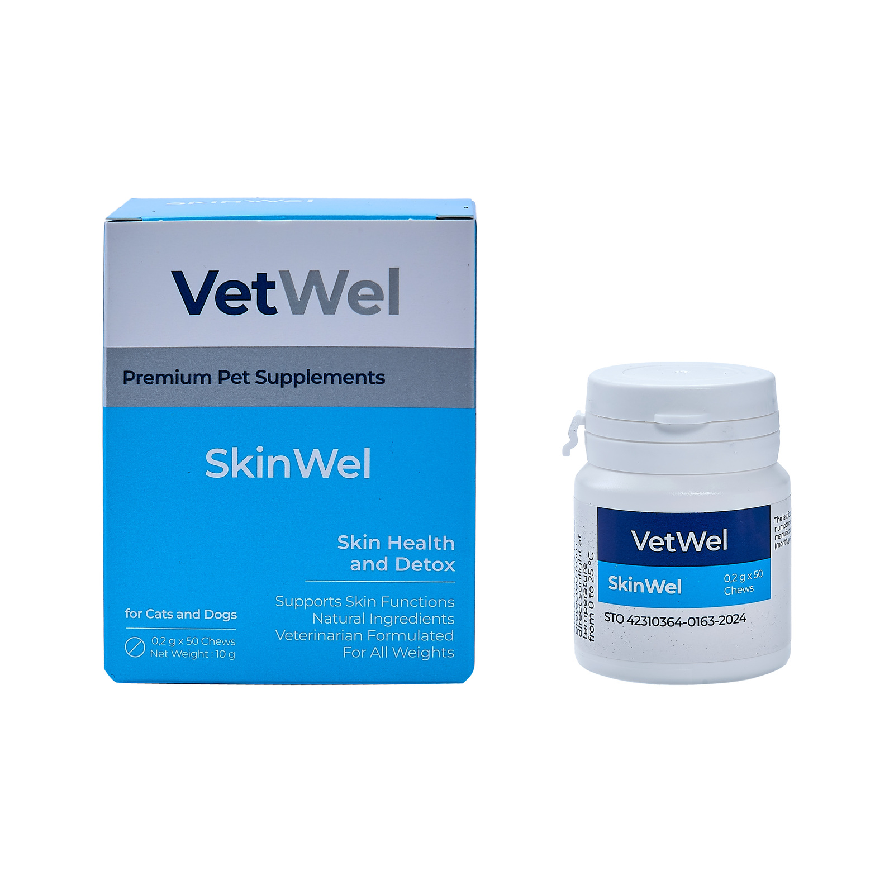
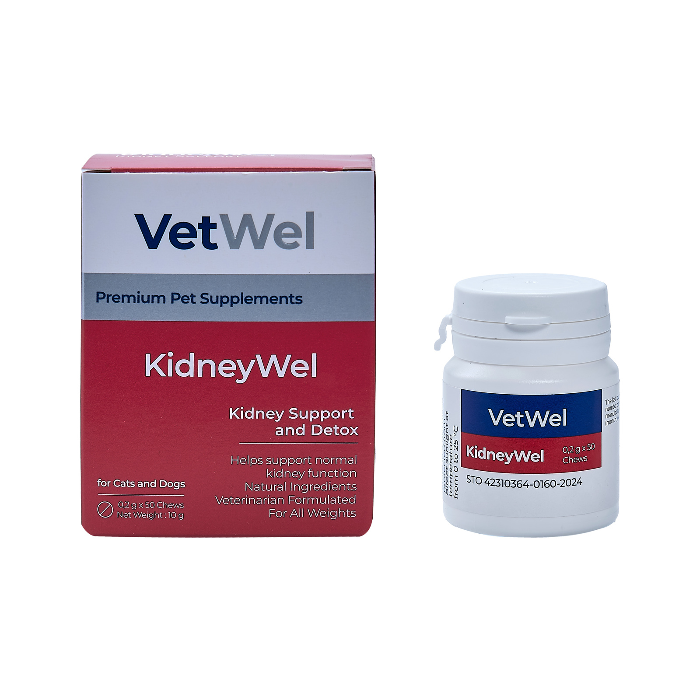
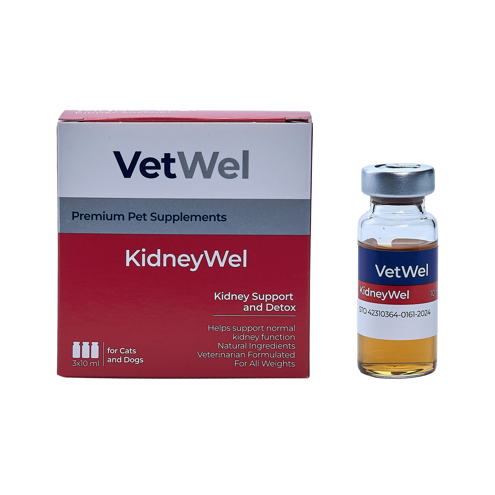
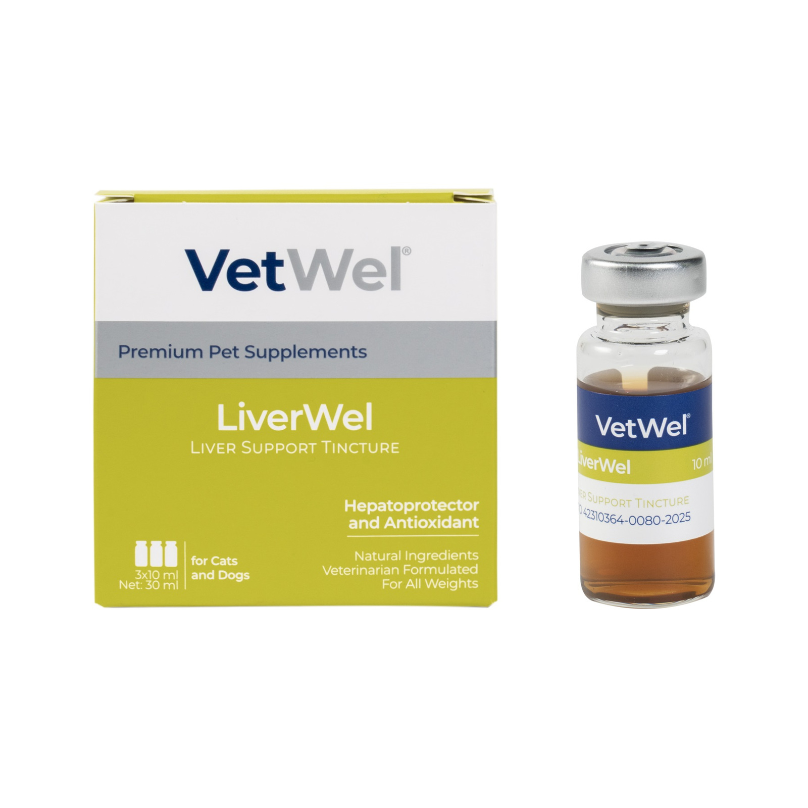
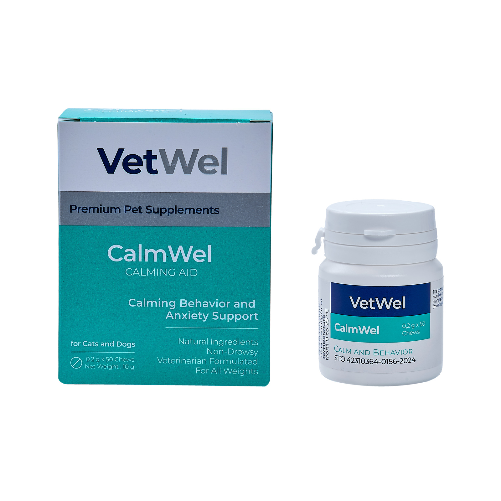
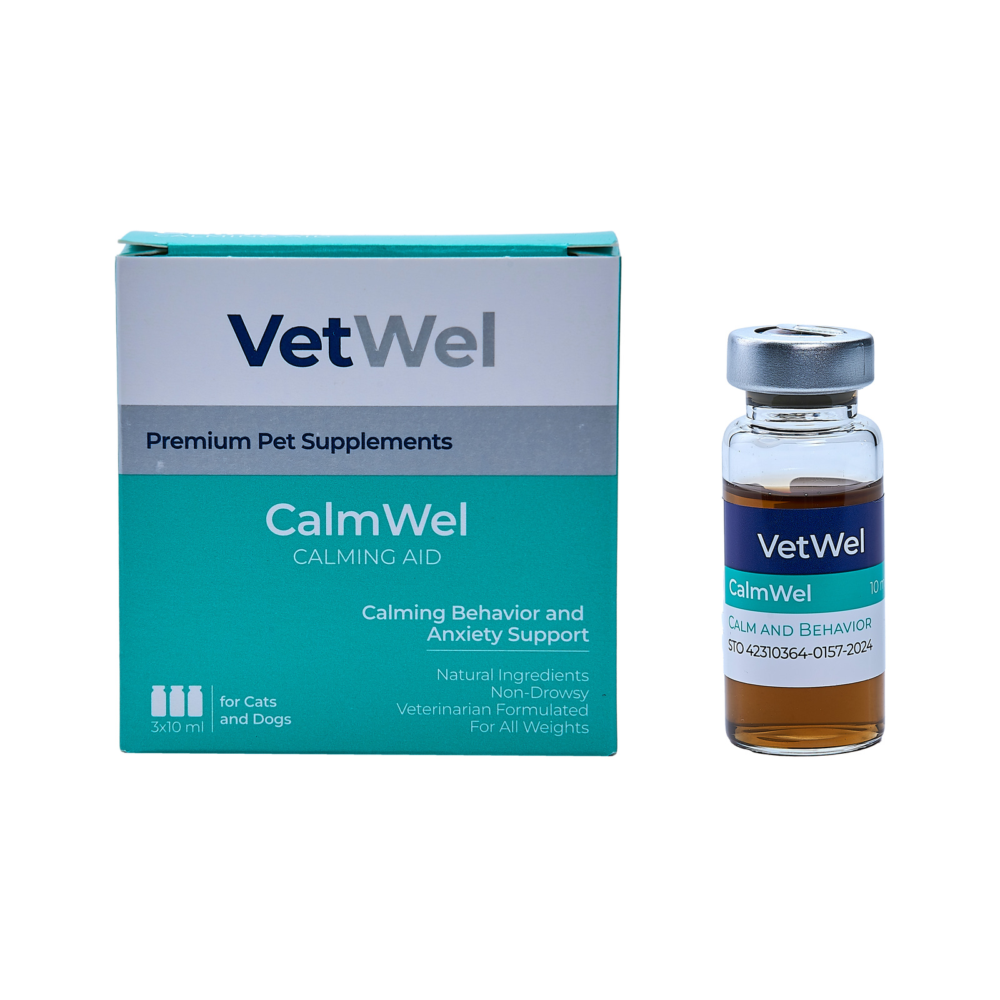
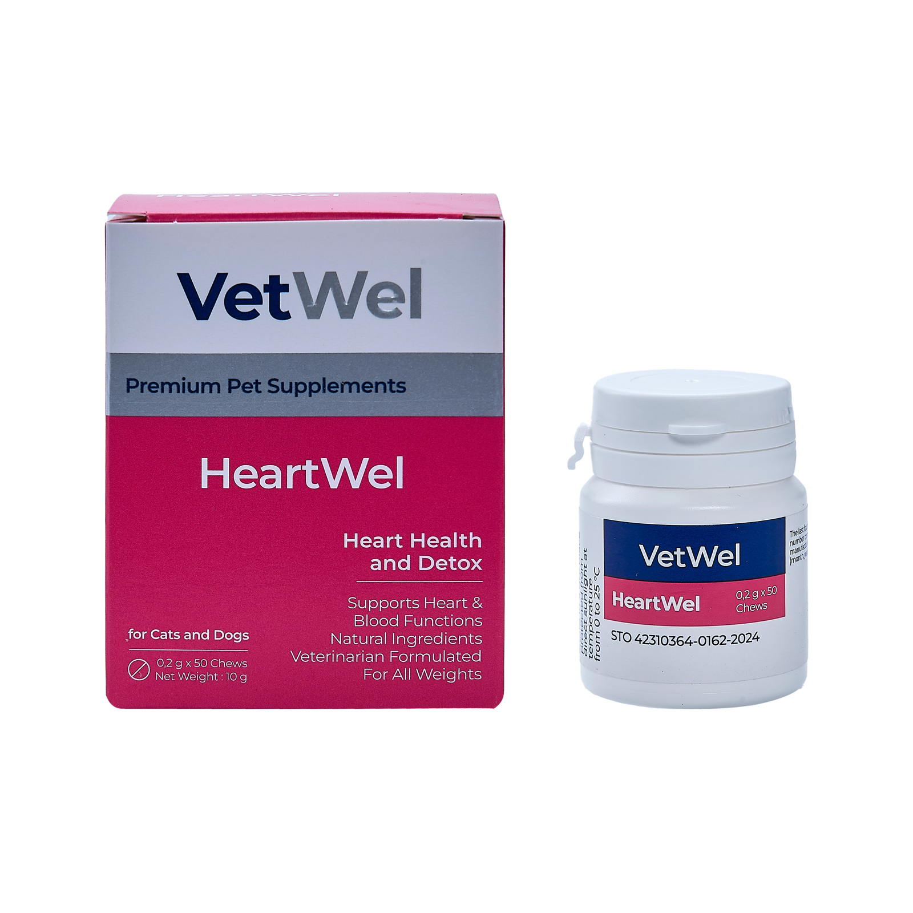

Bilim Temelli Formülasyon
Ürünlerimiz, bileşenlerin işlevsel uyumu ve hedeflenen sağlık alanları dikkate alınarak geliştirilir.
VetWel, veteriner hekimlik deneyimini modern beslenme bilimiyle birleştirerek kedi ve köpeklerin farklı sağlık ihtiyaçlarına yönelik güvenilir, yenilikçi ve yüksek kaliteli sağlık çözümleri geliştirir.

Evcil hayvanların sağlık gereksinimleri tek bir çözümle sınırlı değildir. VetWel, farklı yaşam dönemleri ve sağlık ihtiyaçları için veteriner hekimlik bilgisiyle şekillenen ürünler sunar.
Ürünlerimiz, bileşenlerin işlevsel uyumu ve hedeflenen sağlık alanları dikkate alınarak geliştirilir.
Klinik uygulama deneyimini, evde sürdürülebilir günlük bakım çözümlerine dönüştürüyoruz.
Özenle seçilen içerikler, kalite, işlevsellik ve günlük kullanıma uygunluk esas alınarak bir araya getirilir.
Ürün portföyümüz, kalite standartları ve sahadan gelen ihtiyaçlar doğrultusunda sürekli değerlendirilir ve geliştirilir.
VetWel, kedi ve köpeklerin farklı yaşam dönemleri ve sağlık ihtiyaçları için bilim temelli, kullanımı kolay ve hedefe yönelik tamamlayıcı beslenme çözümleri sunar.
Solunum yolları, bronş sağlığı ve günlük solunum konforunun desteklenmesine yardımcı olur.
Detaylı İnceleKedi ve köpeklerin üriner sistem bakımına yönelik veteriner kullanımına özel sıvı destek sunar.
Detaylı İnceleTablet ve sıvı formlarıyla böbrek fonksiyonları ve mineral dengesinin desteklenmesine yardımcı olur.
Detaylı İnceleTablet ve sıvı formlarıyla karaciğer fonksiyonları ve antioksidan savunmanın desteklenmesine yardımcı olur.
Detaylı İnceleDeri bariyeri, tüy kalitesi ve hassas dönemlerde genel deri sağlığının desteklenmesine yardımcı olur.
Detaylı İnceleKalp ve dolaşım sistemi fonksiyonlarının besinsel olarak desteklenmesine yardımcı olur.
Detaylı İnceleBağırsak mikrobiyotası, sindirim konforu ve dışkı kalitesinin desteklenmesine yardımcı olur.
Detaylı İnceleTablet ve sıvı formlarıyla stresli dönemlerde sakinlik ve davranış dengesinin desteklenmesine yardımcı olur.
Detaylı İnceleAğız hijyeni, diş eti ve ağız mukozasının günlük bakımına yardımcı olur.
Detaylı İnceleKedilerde yutulan tüylerin sindirim sisteminden doğal şekilde uzaklaştırılmasını desteklemeye yardımcı olur.
Detaylı İnceleÖzel bakım gerektiren dönemlerde genel beslenme desteği ve yaşam kalitesinin korunmasına yönelik formül sunar.
Detaylı İnceleHer ürün, kendi sağlık alanına özel görsel kimlik ve formülasyon yaklaşımıyla VetWel çatısı altında sunulur.

Urinary Tract Cleansing
Kedi ve köpeklerin üriner sistem bakımına yönelik, veteriner kullanımına özel sıvı formülasyon.

Respiratory & Immune Support
Solunum yolları, antioksidan savunma ve bağışıklık fonksiyonlarını desteklemek üzere geliştirilmiş tamamlayıcı beslenme ürünü.

Deri bariyeri, tüy kalitesi ve hassasiyet dönemlerinde beslenme desteği.
Bilgi al
Böbrek fonksiyonları ve fosfor dengesinin desteklenmesine yönelik tablet form.
Bilgi al
Böbrek sağlığının desteklenmesine yönelik kullanımı kolay sıvı form.
Bilgi al
Karaciğer fonksiyonları ve antioksidan savunmanın desteklenmesine yönelik tablet form.
Bilgi al
Karaciğer sağlığının desteklenmesine yönelik kullanımı kolay sıvı form.
Bilgi al
Stresli dönemlerde sakinleşme ve davranış dengesinin desteklenmesine yönelik tablet form.
Bilgi al
Stres ve çevresel değişim dönemlerinde kullanıma uygun sıvı destek formu.
Bilgi al
Özel bakım gerektiren dönemlerde yaşam kalitesinin desteklenmesine yönelik beslenme desteği.
Bilgi al
Kardiyovasküler fonksiyonların ve kalp sağlığının desteklenmesine yönelik formül.
Bilgi al
Sindirim sistemi, bağırsak mikrobiyotası ve dışkı kalitesinin desteklenmesine yardımcı olur.
Bilgi al
Kedilerde yutulan tüylerin sindirim sisteminden doğal şekilde uzaklaştırılmasını destekler.
Bilgi al
Ağız hijyeni, diş eti ve ağız mukozasının günlük bakımına yardımcı olur.
Bilgi alEvcil hayvan sahipleri ve veteriner profesyoneller için hazırlanan eğitim içerikleriyle ürün kullanımını, temel sağlık konularını ve koruyucu bakım yaklaşımını anlaşılır hale getiriyoruz.
Uzman görüşleri ve anlaşılır sağlık bilgilendirmeleri.
Doğru kullanım ve günlük bakım önerileri.
Yaşam kalitesini destekleyen pratik bilgiler.
Ürün seçimi ve kullanımıyla ilgili özel durumlarda veteriner hekiminizin önerisini almanız önemlidir.
VetWel portföyündeki ürünlerin sınıflandırması ürüne ve pazara göre değişebilir. Tamamlayıcı ürünler, tanı veya tedavinin yerine geçmez. Ürün etiketini ve veteriner hekiminizin önerisini esas alın.
En uygun ürün; hayvanınızın yaşı, türü, kilosu, beslenme düzeni ve sağlık durumuna göre belirlenmelidir. Özellikle kronik hastalıklarda veteriner hekime danışılmalıdır.
Kullanım süresi ve miktarı ürüne göre değişir. Ambalaj üzerindeki kullanım talimatını ve veteriner hekiminizin yönlendirmesini takip edin.
Satışta bulunan ürünlerimize Amazon mağazamızdan ve yetkili satış kanallarından ulaşabilirsiniz. Güncel bilgi için bizimle iletişime geçin.
Ürünlerimiz, veteriner iş birlikleri veya satış kanalları hakkında bilgi almak için bize ulaşabilirsiniz.